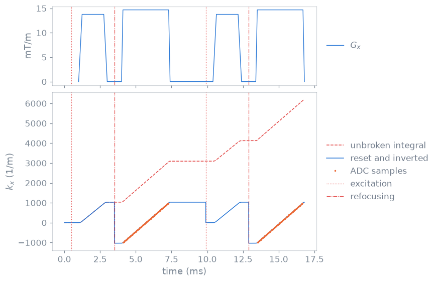

Sequence analysis#
TL;DR
Waveforms, k-space, repetition and RF power are read from the stored blocks, after each block’s rotation.
Two integrals of the gradients exist: an unbroken one for shift phases, and one reset at excitation for echoes.
A field-of-view transform changes the sequence itself, so every later analysis sees it.
Before you write a file you want to know what the scanner will play: where each ADC sample lands in k-space, when the echo forms, how long a repetition is, how much RF it carries. These are computed from the sequence you built, as in lessons 2 and 5 of the Course, and they follow the rotations and the prescription the sequence holds.
Capabilities#
Expands the blocks into gradient waveforms, RF timing and ADC sample times.
Show code and tests
Code:
waveforms_and_times(),adc_times(),rf_times(). Tests: the gradient waveforms are the toolboxs; a range of blocks expands as the toolbox expands it; a trapezoid is its four corners (test_waveforms.py).Applies each block’s rotation to the waveforms, and reports every RF use.
Show code and tests
Code:
compat=Falseofwaveforms_and_times(). Tests: a quarter turn about z moves the readout onto the other axis; every use a pulse can have is reported (test_waveforms.py).Integrates the gradients to the k-space position of every ADC sample.
Show code and tests
Code:
calculate_kspace(),adc_kspace(). Tests: the trajectory is the toolboxs; there is one sample position per sample; the adc kspace is where calculate kspace puts the samples (test_kspace.py).Resets the trajectory at an excitation and inverts it at a refocusing pulse.
Show code and tests
Code:
calculate_kspace(). Tests: an excitation puts the trajectory back at the origin; a refocusing turns the trajectory around (test_kspace.py).Finds where each readout passes nearest the centre of k-space.
Show code and tests
Code:
adc_echoes(). Tests: a readout sweeps k from where the prewinder left it; a stepped phase encode moves the line it reads (test_kspace.py).Places a run of readouts as the whole sequence does, without integrating the rest.
Show code and tests
Code:
readouts=ofadc_kspace(). Tests: each readout is where the whole sequence puts it; a run of readouts is the columns they hold in the whole trajectory (test_readout_kspace.py).Finds the repetition, and takes a declared
TRSizethe blocks agree with.Show code and tests
Code:
repetition(). Tests: a scan repeats at the length of one shot; a phase encode does not make a shot different; a declared TR the blocks contradict is ignored (test_repetition.py).Reads the repetition from the block definitions, so a changed amplitude does not break it.
Show code and tests
Code:
repetition(). Tests: shots that differ only in their waveforms repeat by structure; the repeat survives a rotation; adding a block makes the answer stale (test_repetition.py).Reports RF energy, peak and mean power and RMS B1, with dynamic pTx channels added in power.
Show code and tests
Code:
calc_rf_power(),calc_rf_power(). Tests: ptx channels add their powers and never cancel; the sequence power sums its pulses; a window keeps its loudest stretch (test_rf_power.py).Scales, translates and rotates the field of view of a finished sequence.
Show code and tests
Code:
TransformFOV. Tests: a quarter turn about z sends x onto y; a second prescription turns what the first left; scaling an axis scales what it draws (test_transform_fov.py).Keeps a rotation as an annotation, so a thousand orientations share one waveform.
Show code and tests
Code:
TransformFOV. Tests: a rotation is an annotation and not a new waveform; baking the rotation into the waveforms is refused (test_transform_fov.py).Moves RF and ADC phases by the translation, from the gradient area swept so far.
Show code and tests
Code:
translation=ofTransformFOV. Tests: a readout is acquired at the phase the shift asks for; a scan shifted across threads matches it shifted in short ranges; two identical repetitions read at the same phase (test_transform_fov.py,test_fov_shift.py).Draws the sequence, its ADC samples in k-space and its RF profiles.
Show code and tests
Code:
plot(),paper_plot(),plot_kspace(),plot_rf(). Tests: none beyond the examples that draw them.
Division of responsibility#
Segments the repetition into its intermediate representation. It reads
repetition()and requires it to start at block 1.Applies the field-of-view offset a prescription carries. It calls
TransformFOVwiththrough_rotation=True, and counts the gradient area on from the end of the file before.Fills the readout table. It reads
adc_echoes()for each readout’s start and path.
Method#

Two spin-echo shots with an unbalanced readout. The unbroken gradient integral (dashed) keeps growing; the excitation-aware trajectory (solid) restarts at each excitation, is inverted by the refocusing pulse, and crosses zero in the middle of the readout, where the ADC samples (dots) are placed.#
Gradient integrals#
The unbroken integral is the reference of the RF and ADC shift phases: a
translation moves a pulse or a readout by the area the gradients have swept
since the start, whatever the pulses did. The echo anchor needs the other one,
the position of the magnetisation in k-space, which an excitation resets and a
refocusing pulse inverts. TransformFOV carries both
across consecutive ranges as swept_k and block_k_origin.
Field-of-view transform frames#
A translation is in metres along the channel axes, or along the logical axes
with through_rotation. A prescription rotation is composed after the
rotation each block already holds. The phase of an RF shape is stored in
cycles, ADC modulation and phase offsets in radians.
Repetition detection#
A repetition is the shortest period of the block definitions from block 1 that every later block repeats, so a phase-encode step or a spoke angle does not break it. A slice with its own preparation and dummy shots is one repetition, and a block played once makes the whole sequence one.
The units, the search and the translation algorithm are in Sequence-analysis computations.
Examples#
2. Echo and repetition time: the echo time measured from the k-space trajectory, and the repetition drawn.
5. Radial sampling and gradient surgery: the trajectory of a radial acquisition.
Sequence and system limits, Plotting: the container, the transform and the figures.